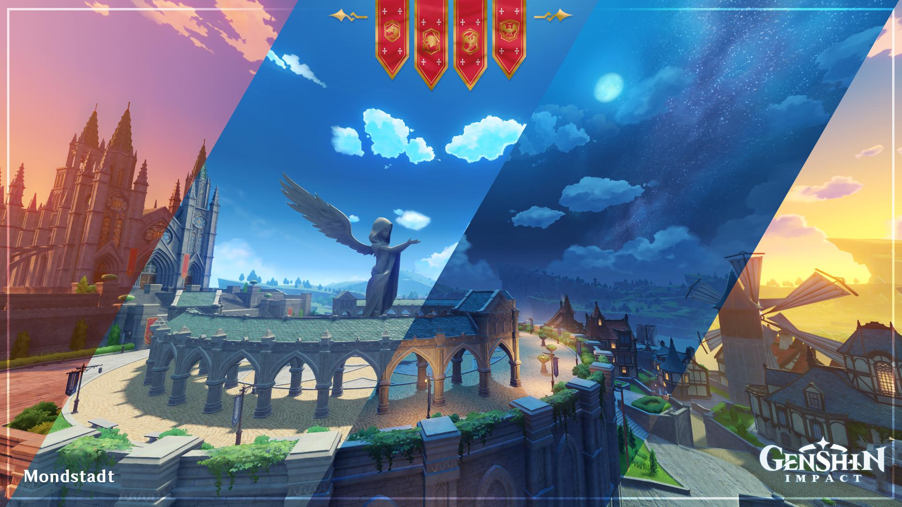
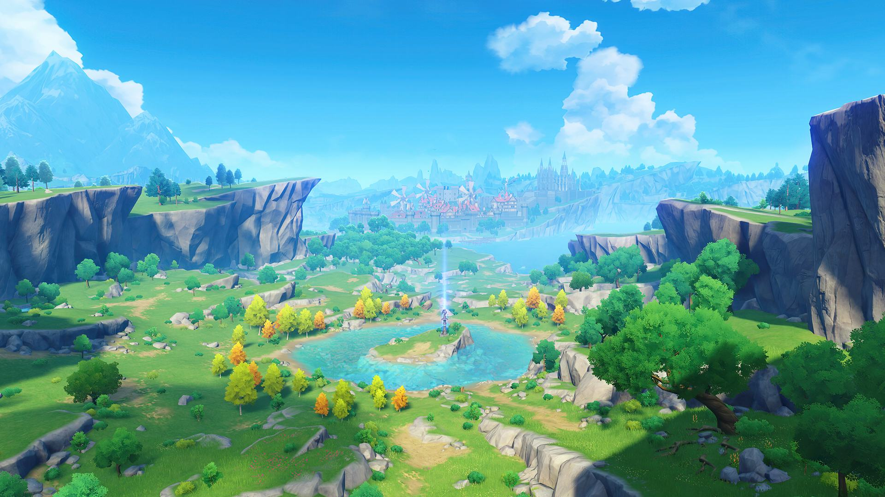
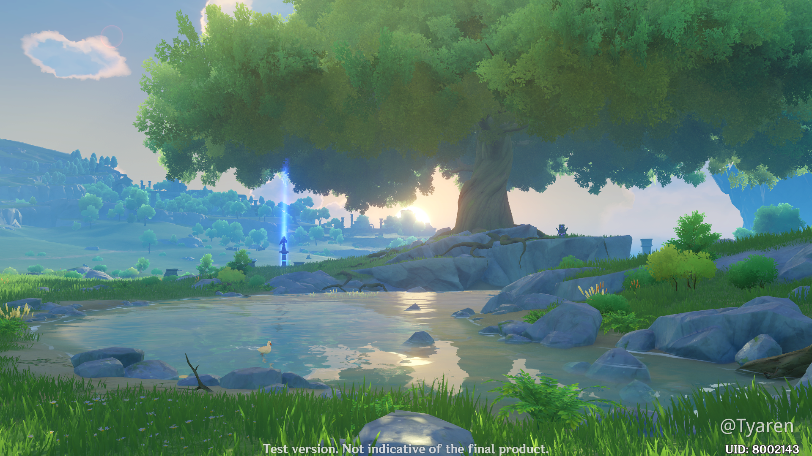
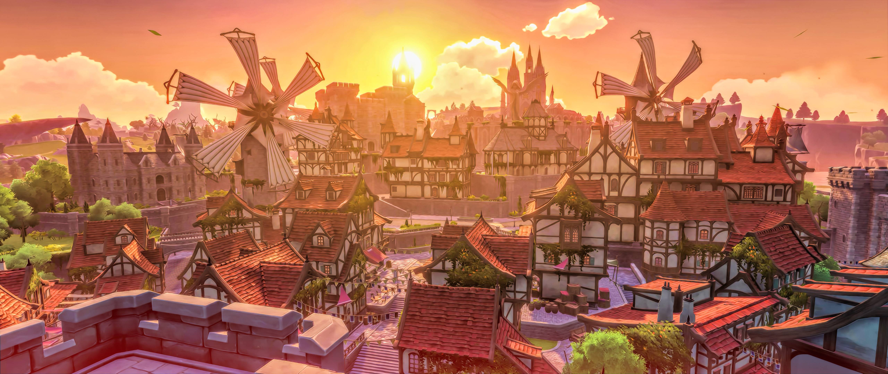

Sejarah

Kata "Mondstadt" dalam bahasa Jerman berarti "Kota Bulan." Mondstadt
terinspirasi dari elemen angin (Anemo) dan terkenal dengan kebebasan
serta semangat kebebasan yang melekat dalam masyarakatnya. Mondstadt
awalnya merupakan kota kecil yang kemudian berkembang berkat
pelindungnya, Archon Anemo, Barbatos, yang melindungi kota dari
ancaman-ancaman luar dan membawa perdamaian serta kesejahteraan bagi
rakyatnya. Penduduk Mondstadt sangat menghormati Archon ini yang
membantu mereka melawan tirani di masa lampau dan membebaskan kota
dari kekuasaan yang menindas.
Masyarakat Mondstadt sangat memegang teguh kebebasan dan
kemerdekaan, serta menghormati alam dan kehidupan yang damai. Budaya
mereka dipengaruhi oleh musik, puisi, dan festival seperti Windblume
dan Ludi Harpastum yang dirayakan setiap tahunnya. Penduduk percaya
bahwa kehidupan harus dijalani dengan riang dan bebas, seperti
filosofi Archon Anemo, Barbatos, yang memberi inspirasi pada kota
ini.
Geografis

Kota Mondstadt dikelilingi oleh bukit dan pegunungan serta angin
yang selalu berhembus lembut, menjadikan iklimnya sejuk dan
menyegarkan. Mondstadt terletak di wilayah yang luas dengan Danau
Cider yang indah di dekatnya, dan kota ini dikenal sebagai tempat
tinggal bagi angin yang melambangkan kebebasan. Di sebelah timur
terdapat Cider Lake yang sering menjadi tempat untuk festival dan
aktivitas penduduk. Mondstadt berada di ketinggian, dikelilingi
tebing dan padang rumput, dengan pemandangan alam yang hijau dan
segar.
Kota Bandung dialiri dua sungai utama, yaitu Sungai Cikapundung dan
Sungai Citarum beserta anak-anak sungainya yang pada umumnya
mengalir ke arah selatan dan bertemu di Sungai Citarum. Dengan
kondisi yang demikian, Bandung selatan sangat rentan terhadap
masalah banjir terutama pada musim hujan.
Wisata
Mondstadt dikenal sebagai destinasi wisata populer di Teyvat,
terutama bagi para petualang dari seluruh benua yang ingin merasakan
keindahan alamnya. Selain itu, Mondstadt juga menawarkan arsitektur
klasik dengan pengaruh gaya abad pertengahan Eropa, yang memikat
para wisatawan untuk menikmati atmosfer kota yang damai dan
harmonis.
Windrise Tree

Berada di sebelah selatan Mondstadt, Windrise Tree menjadi tempat
favorit bagi para pelancong dan penduduk lokal. Di sini terdapat
pohon besar yang dianggap sakral, yang selalu diselimuti angin
lembut. Windrise menjadi lokasi yang tenang untuk menikmati alam
Mondstadt dan mengabadikan momen.
Knights of Favonius Headquarters

Markas utama Knights of Favonius yang terkenal, terletak di pusat
Mondstadt. Tempat ini merupakan simbol kekuatan dan perlindungan
bagi penduduk Mondstadt. Selain sebagai tempat tinggal para
ksatria, markas ini juga membuka kunjungan bagi mereka yang ingin
mengenal lebih dekat tentang para pelindung Mondstadt.